How the factory office uses the console, task by task: suppliers, deciding requests, the monthly bills, the factory records, the app's content, configuration and users. Step by step, with screenshots and worked examples.
For: the factory office: clerks, managers, content editors and the factory administrator.
Screenshots: taken from the real console with sample data for Galaboda Tea Factory. Names and figures are examples.
As of: 28 October 2026. The rules behind every screen are in "Admin Console: How It Works".
Contents
Signing in and finding your way
Who does what
The dashboard
Suppliers
Deciding credit requests
Recording a request made at the counter
Tea packets
Change requests
Inquiries
Bills
Leaf intake
Rates and month close: calculated bills
Rates and month close: imported bills
News, banners and fixed pages
Notifications
Configuration
Users and roles
Reports, audit log and data status
When the console says no
1. Signing in and finding your way
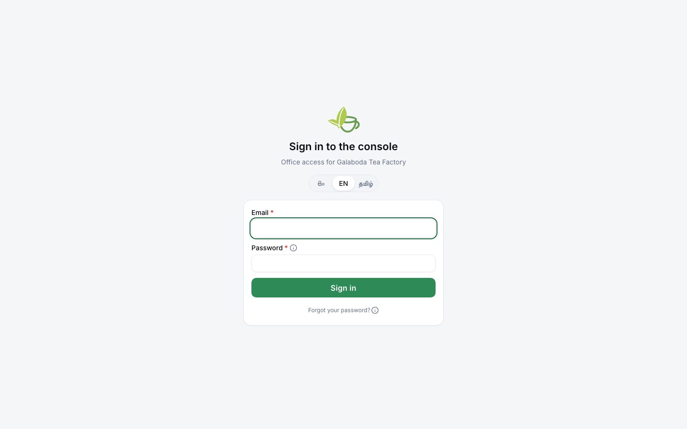
Figure 1.1 Sign in. The factory's name and the language buttons are at the top.
Open your factory's console address in a web browser (Chrome or Edge on the office computer).
Choose a language: Sinhala, English or Tamil.
Type your work email and password and click Sign in. A new user is given a first password by the administrator and must change it at the first sign-in.
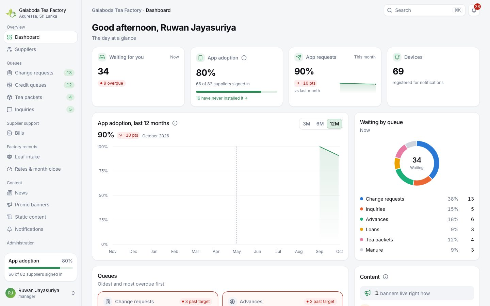
Figure 1.2 The console after signing in: the sidebar on the left, search and the notification bell at the top right.
Part of the screen
What it is for
Sidebar
Every module your role may open, in groups: Overview, Queues (with the number waiting), Supplier support, Factory records, Content, Administration
Search (Ctrl+K)
Find a supplier by code or name, or jump to a page by its name
Bell
What is waiting for you, oldest first, and what suppliers just did in the app
Your name (bottom left)
Your profile, appearance, text size and Sign out
On a shared office computer
Always sign out when you leave. Sign-out asks first, so a stray click does not lose your work.
2. Who does what
Role
Daily work in the console
Clerk
Supplier records, leaf intake, importing or generating the month's bills, recording requests made at the counter, change requests, replying to inquiries
Manager
Deciding advances, loans, manure and tea packets; rates, month close and publishing bills; approving savings withdrawals; reports
Content editor
News, promo banners, fixed pages (FAQ, terms) in all three languages
Factory administrator
Configuration, users and roles; reads every factory record but changes none
The two-person rule
The person who records a request, enters the month's rate or imports the bills may not approve or publish them. The console does not show that person the approve or publish button; another person must do it.
Enter every approval in the factory system too
The console never writes to the factory's own system. Each approval dialog reminds you: after approving here, enter the same thing in the factory system, because that system prints the slip and pays the money.
3. The dashboard
The dashboard (Figure 1.2) is the day at a glance:
Waiting for you: everything in the queues (34 in the example, 9 of them past their target time).
App adoption: suppliers signed in to the app against the total (66 of 82, 80%). Click "16 have never installed it" for the list of suppliers to help at the counter.
App requests: the share of requests that came from the app this month (90%).
Devices: phones registered for notifications.
Waiting by queue and Queues: each queue with the age of its oldest item. A queue of three that has waited four days needs attention before twenty from this morning.
Content: what is quietly wrong, such as an article missing its Sinhala text or a banner whose dates have passed.
4. Suppliers
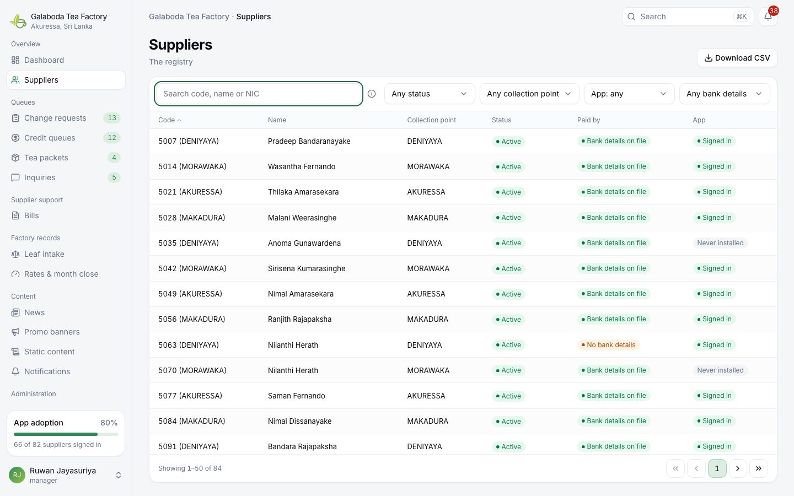
Figure 4.1 The supplier list, with filters for status, collection point, app use and bank details.
4.1 Find a supplier
Click Suppliers, or press Ctrl+K anywhere.
Type a code, name or NIC. Use the filters: App: any → Never installed lists suppliers who have not installed the app.
Click the row to open the supplier.
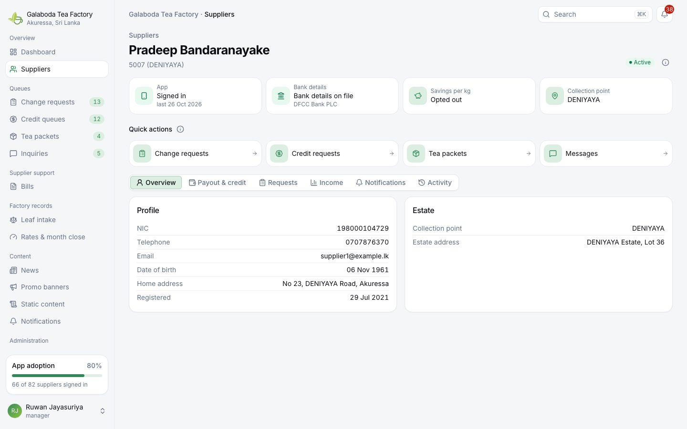
Figure 4.2 A supplier: the app, bank, savings and collection point at the top, quick actions, then the tabs.
Tab
What it shows
Overview
Profile (NIC, phone, addresses) and estate
Payout & credit
How they are paid, bank (masked), savings per kg, credit balances and the savings passbook (Figure 4.3)
Requests
Every advance, loan, manure and tea-packet request with its status (Figure 4.4)
Income
The same graph, list and deductions views the supplier sees in the app
Notifications
Which notifications reach this supplier, and why one does not (no phone, turned off, not sent)
Activity
What the supplier did in the app
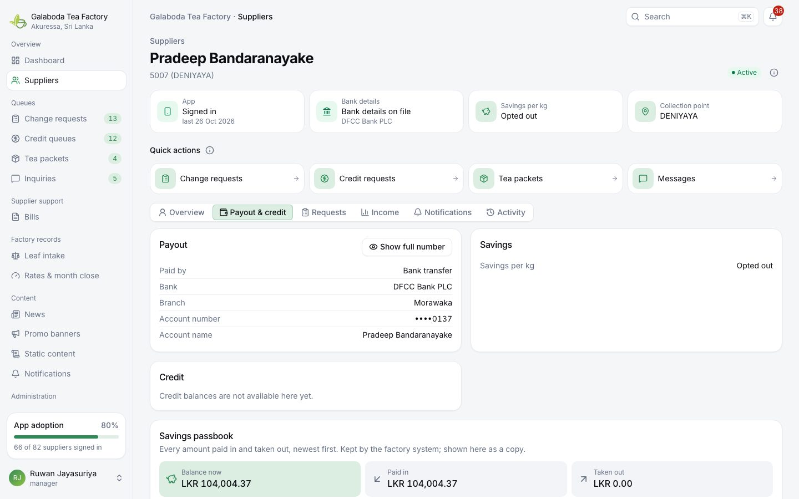
Figure 4.3 Payout & credit
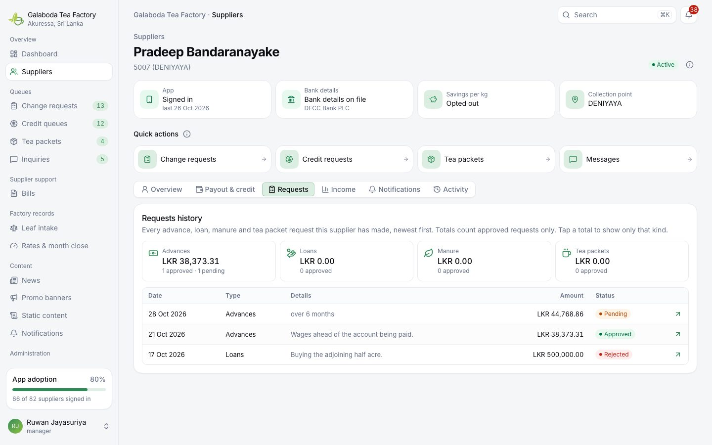
Figure 4.4 Requests
4.2 Show the full bank account number
On Payout & credit, click Show full number, type the reason (for example "Supplier asked to confirm the account at the counter") and confirm. The reason is recorded in the audit log, and the number is hidden again when you leave.
4.3 Reset a supplier's app password Clerk
Open the supplier and click Reset app password at the top right.
Choose how you checked it was them (for example "Book at counter").
The console shows a one-time password: give it to the supplier. Their phones are signed out, and the app asks them to choose their own password at the next sign-in. Who issued it, and when, is recorded.
Beside it, the status button suspends or closes a supplier.
4.4 Add a supplier Clerk, sync off
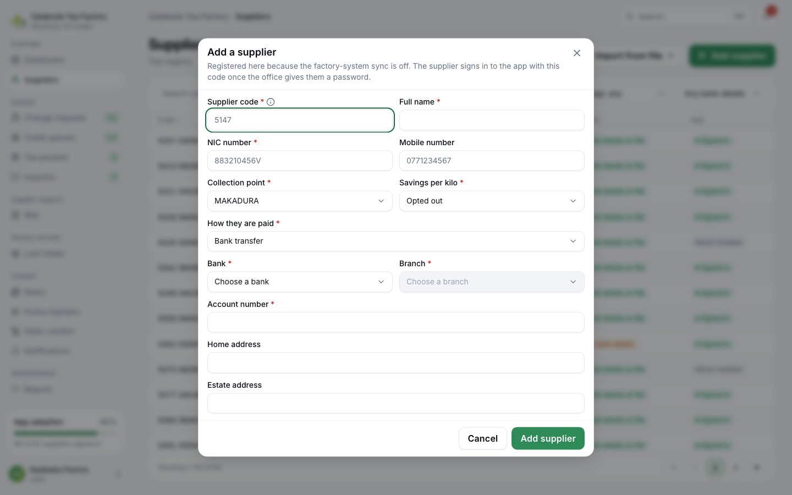
Figure 4.5 Add a supplier
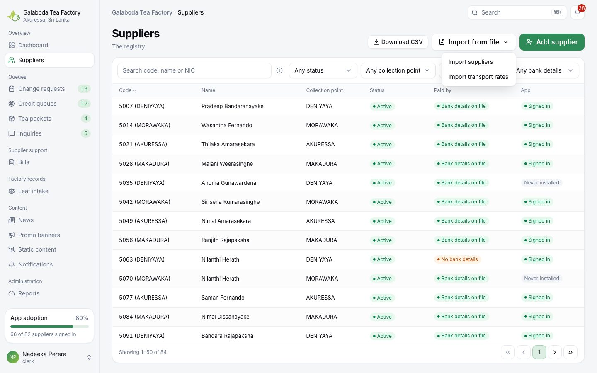
Figure 4.6 Import from file
On Suppliers, click Add supplier.
Type the factory's own Supplier code (letters and digits; the division in brackets is optional). The number must not already be used anywhere in the factory: 5147 and 5147 (DENIYAYA) are the same supplier.
Fill in name, NIC, mobile, collection point and savings per kilo.
Choose how they are paid. For bank transfer, choose the bank and branch from the factory's list and type the account number.
Click Add supplier. Then reset their password (4.3) so they can use the app.
Many at once: Import from file → Import suppliers (Figure 4.6), or Import transport rates for suppliers on their own transport rate. See section 13.3 for how imports work.
Opening balances
On the supplier's Payout & credit tab, the Opening balances card holds what the supplier owed and held when the factory started keeping records here: advance, loan, manure, tea packets, savings and the unpaid balance, all as at one cut-over month for the whole factory (its first month with bills here), with a note. Many at once: Import from file on Suppliers. They lock once a bill of ours is published for the supplier.
5. Deciding credit requests Manager
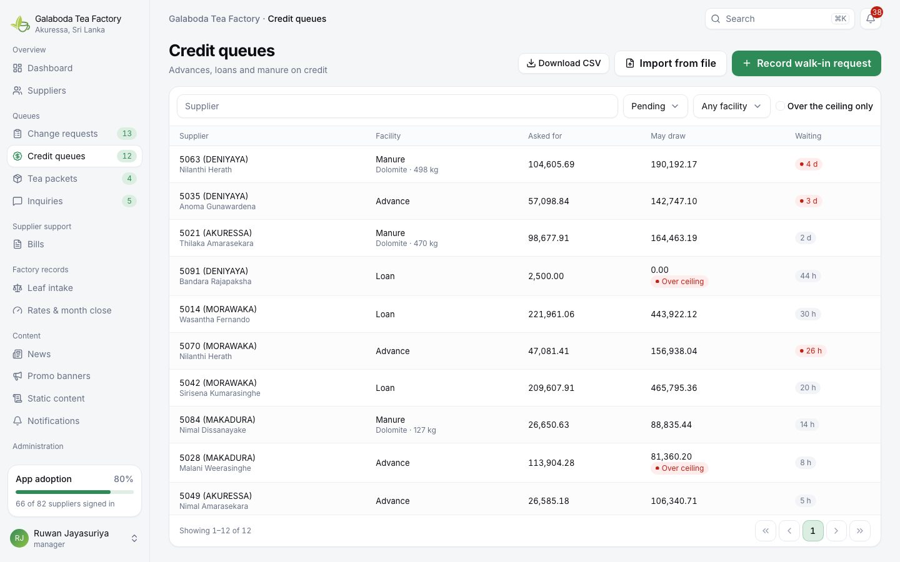
Figure 5.1 Credit queues: advances, loans and manure in one list, oldest first. "Over ceiling" marks a request above the supplier's limit.
Click Credit queues. Filter by status, facility, or Over the ceiling only.
Click a request to open it (Figure 5.2). Check What this supplier may draw and How this was worked out: these are exactly the figures the supplier saw in the app.
Click Approve or Reject.
Type the Decision note (required; the supplier reads it), or click a common note.
Confirm. Then enter the approval in the factory system, as the dialog reminds you.
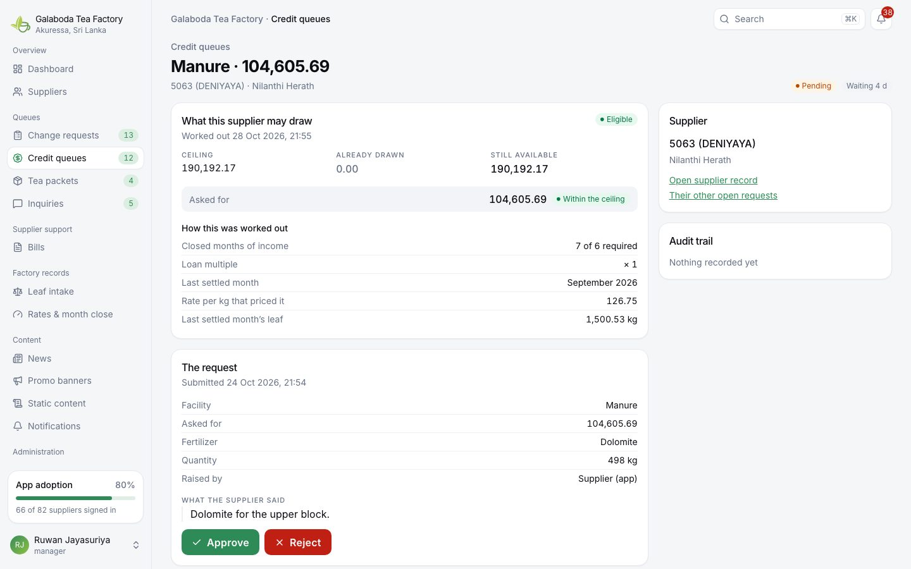
Figure 5.2 A manure request with its working.
Example: reading the working (Figure 5.2)
Supplier 5063 (DENIYAYA) asks for Dolomite, 498 kg Rs. 104,605.69
Closed months of income 7 (6 required)
Last settled month September 2026
Rate per kg that priced it Rs. 126.75
Last settled month's leaf 1,500.53 kg
Ceiling 126.75 × 1,500.53 = 190,192.1775 → Rs. 190,192.17
Already drawn 0.00
Still available Rs. 190,192.17 → "Within the ceiling"
The ceiling is cut down to the cent, never rounded up, so the figure shown is one the form accepts.
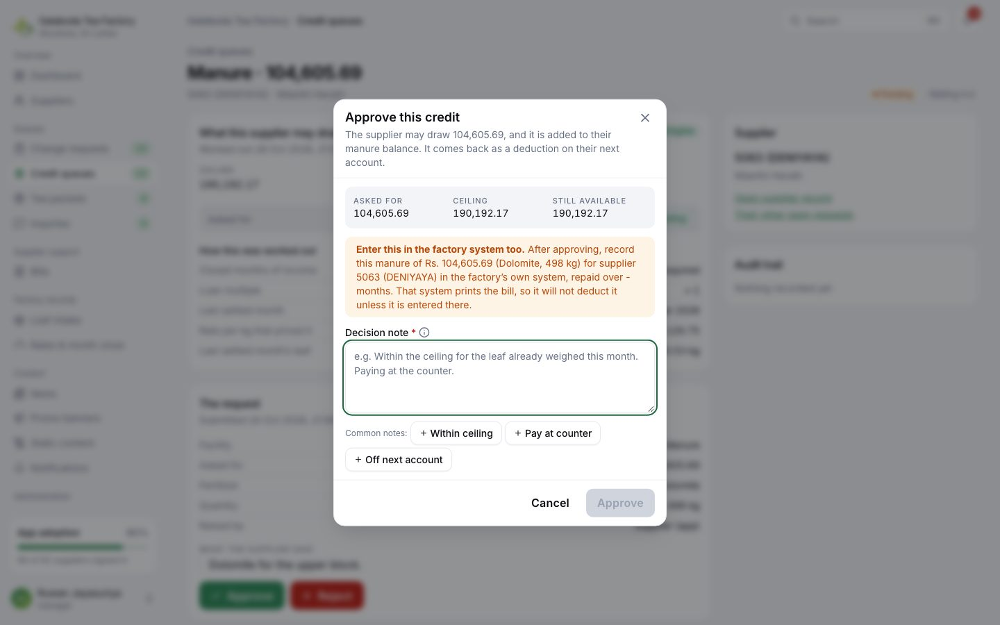
Figure 5.3 Approve: the reminder to enter it in the factory system
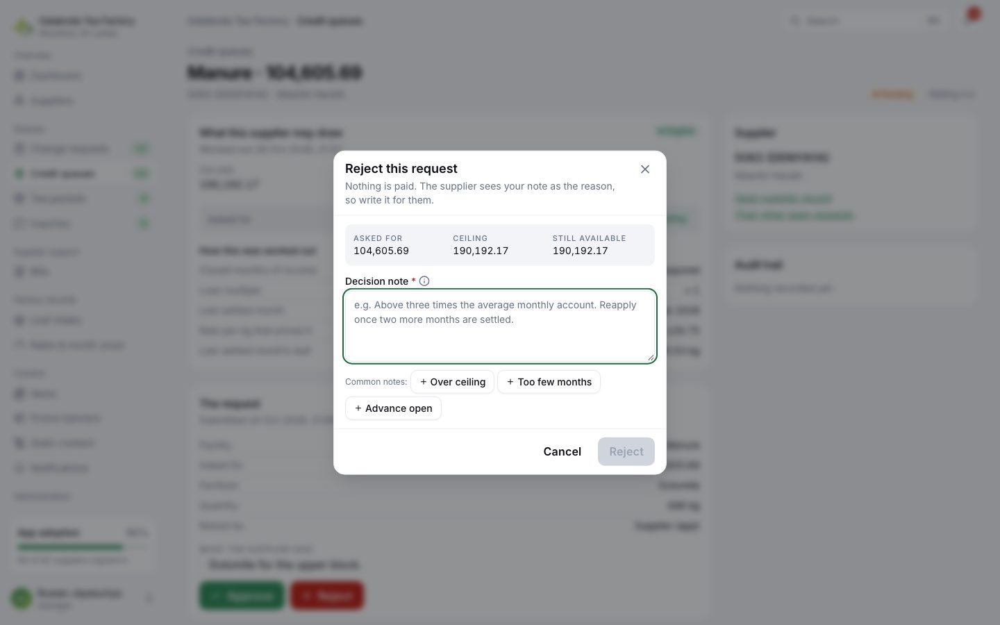
Figure 5.4 Reject: the supplier reads the note
The console refuses an approval when
you recorded the request yourself (two-person rule);
the amount is now above the supplier's limit (a month may have been published since they asked);
a loan is still owed (for a new loan or an advance), or an advance is still outstanding (for an advance);
the supplier is suspended or closed.
6. Recording a request made at the counter Clerk, sync off
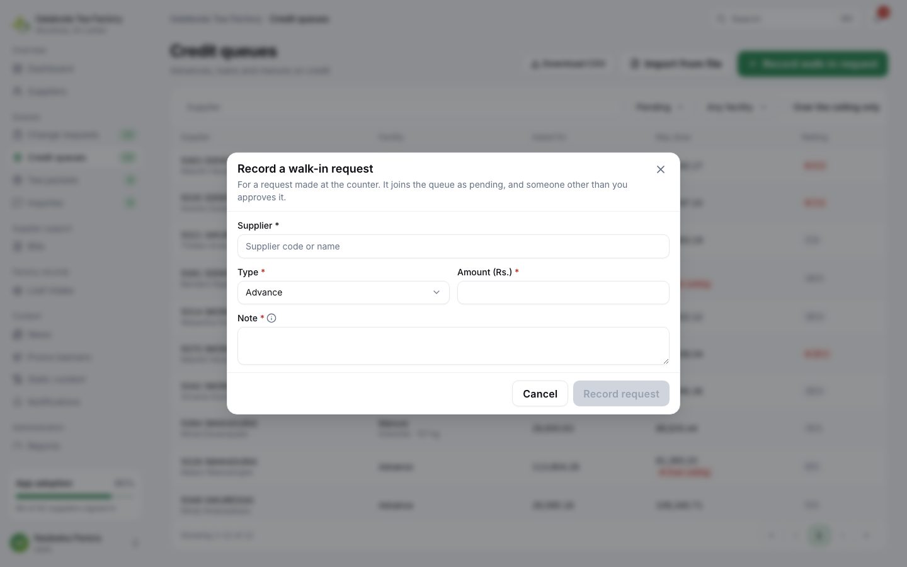
Figure 6.1 Record a walk-in request.
On Credit queues, click Record walk-in request.
Type the supplier code or name and choose the type (advance, loan or manure).
Type the amount. For a loan or manure choose the repayment period; for manure choose the fertilizer and quantity (the price comes from the factory's catalogue).
Type a note of at least 10 characters (for example "Asked at the counter, needs it for school fees").
Click Record request. It joins the queue as pending, and a manager decides it.
A request over the limit is still recorded as asked, with the limit shown; the manager's approval refuses it. Many at once: Import from file.
7. Tea packets Manager
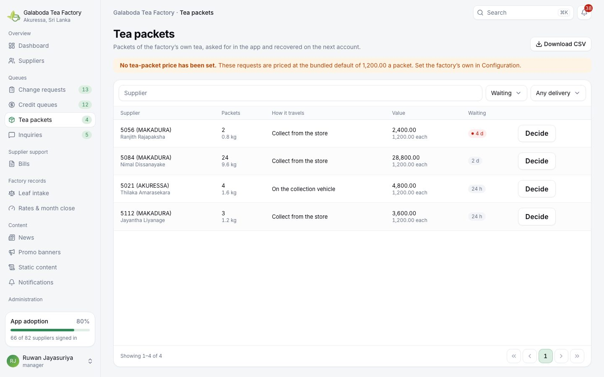
Figure 7.1 Tea packets waiting: packets, weight, how it travels and the value.
Click Tea packets. Filter Any delivery → On the collection vehicle to pack the vehicle orders before it leaves.
Click Decide on a row (Figure 7.2).
Type a decision note (for example "Ready for collection from the store from Monday") and click Approve or Reject.
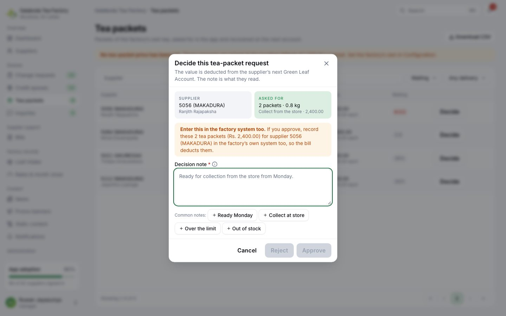
Figure 7.2 Example: supplier 5056 asks for 2 packets (0.8 kg), collected from the store, Rs. 2,400.00 on the next bill's Tea line.
The price is fixed when you decide. An orange line at the top (Figure 7.1) means the factory has not set its own packet price yet: set it in Configuration → Tea packets.
8. Change requests Clerk or manager
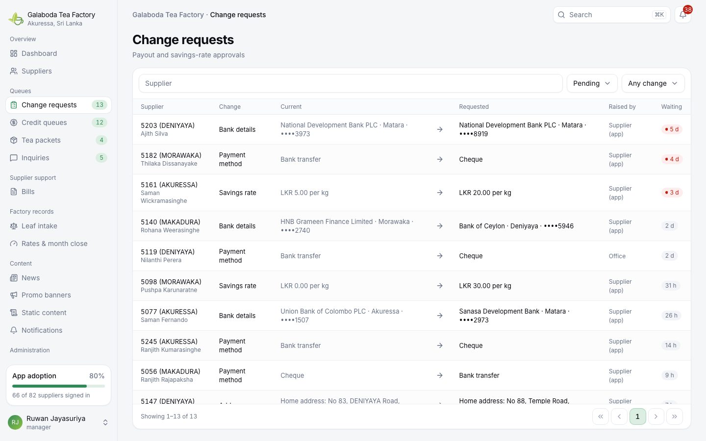
Figure 8.1 Changes suppliers asked for: bank details, payment method, savings rate and address, with the current and requested values side by side.
Click Change requests and open a row (Figure 8.2).
Compare Active now with Requested; changed rows are marked.
For a bank change, check the passbook or bank statement before approving.
Click Approve or Reject, type the note (for example "Passbook checked against the NIC at the counter") and confirm (Figure 8.3).
Make the same change in the factory system.
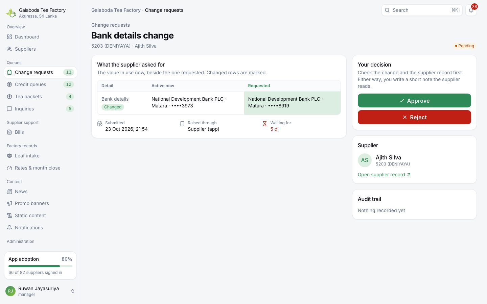
Figure 8.2 A bank details change
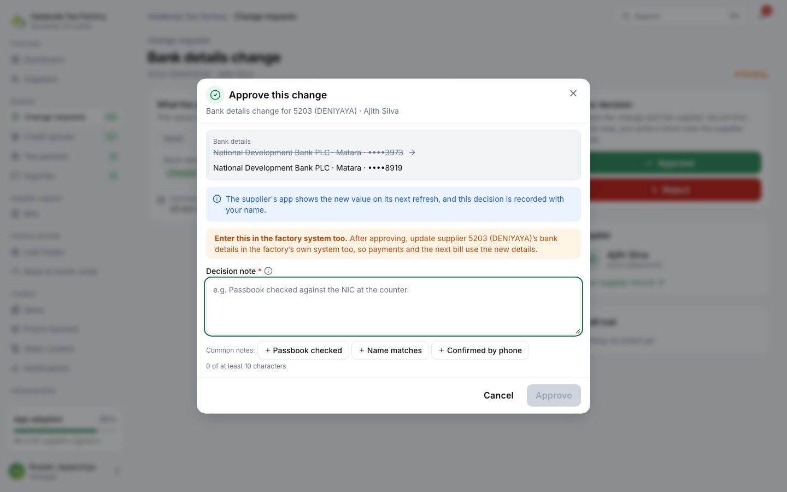
Figure 8.3 Approve this change
Until you approve, the supplier is still paid to the old account, and the app shows the new one as pending. A savings-rate change starts from the next month not yet closed.
9. Inquiries Clerk
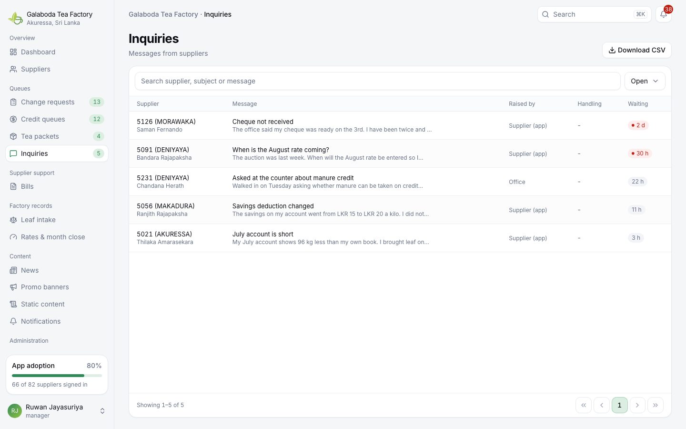
Figure 9.1 Messages from suppliers
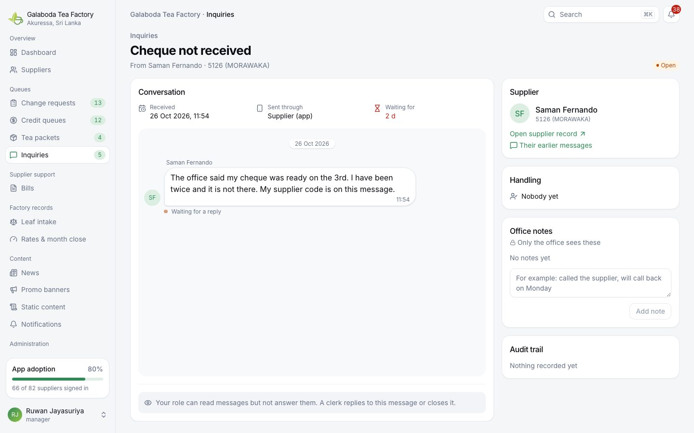
Figure 9.2 A conversation
Click Inquiries and open a message.
Type a reply (or click a suggested reply) and send it. The supplier reads it in the app and gets a notification.
When nothing more is needed, close the inquiry. Closing without replying files a message that needed no answer.
Office notes on the right are seen only by the office (for example "Called the supplier, will call back on Monday"). A manager can read inquiries but not answer them (Figure 9.2, bottom).
10. Bills
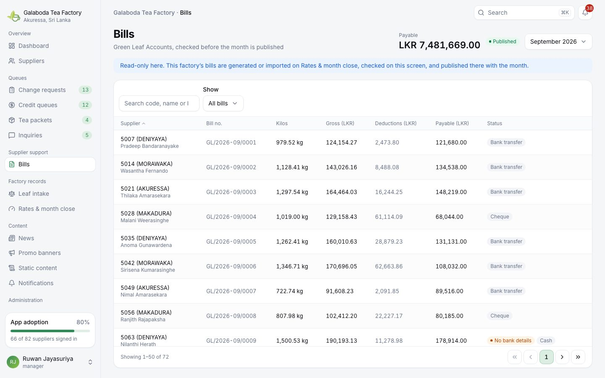
Figure 10.1 The month's Green Leaf Accounts, with the payable total and a month selector.
Click Bills and choose the month at the top right.
Search by code, name or bill number, or use Show to list, for example, bills with nothing payable or with no bank details.
Click a row to open the bill as the supplier sees it (Figure 10.2).
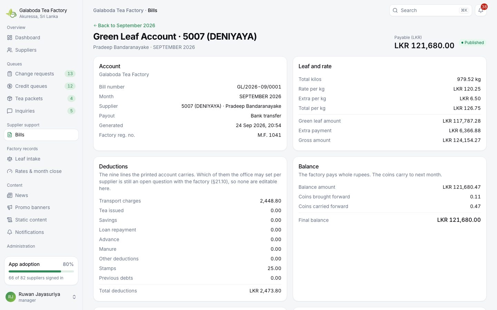
Figure 10.2 One bill, laid out like the printed slip.
Example: supplier 5007, September 2026 (Figure 10.2)
979.52 kg × (rate 120.25 + extra 6.50 = 126.75)
Green leaf amount 117,787.28
Extra payment 6,366.88
Coins brought forward 0.11
Gross amount 124,154.27
Deductions 2,473.80 (transport 2,448.80 + stamps 25.00)
Balance amount 121,680.47
Final balance 121,680.00 coins 0.47 carried to October
The bills screen is for checking and answering suppliers. Bills are made and published on Rates & month close (sections 12 and 13). With the factory sync on, bills arrive from the factory system and are read-only.
11. Leaf intake Clerk, sync off
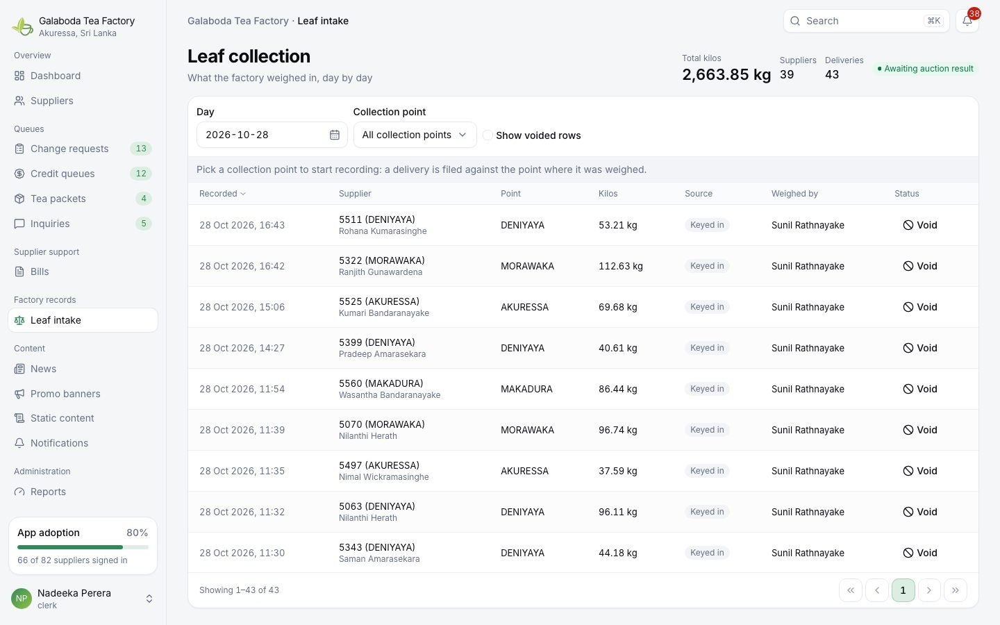
Figure 11.1 One day's weighings: 2,663.85 kg from 39 suppliers in 43 deliveries.
Click Leaf intake. Choose the Day and the Collection point.
Enter each weighing: supplier code, then kilos. The totals at the top update as you go, so a mistyped kilo shows before it reaches a bill.
To correct a weighing, click Void on its row and give the reason; then enter the right one. A weighing is never deleted.
Enter each supplier's leaf on the day it is weighed: the advance limit in the app is this month's kilos so far.
A published month is locked: its leaf can no longer be changed.
Importing a day's or month's weighings from the scale's file is coming.
12. Rates and month close: calculated bills Clerk and manager
For a factory whose bills are worked out in the console (Configuration → Bill calculation → "Calculated in this console").
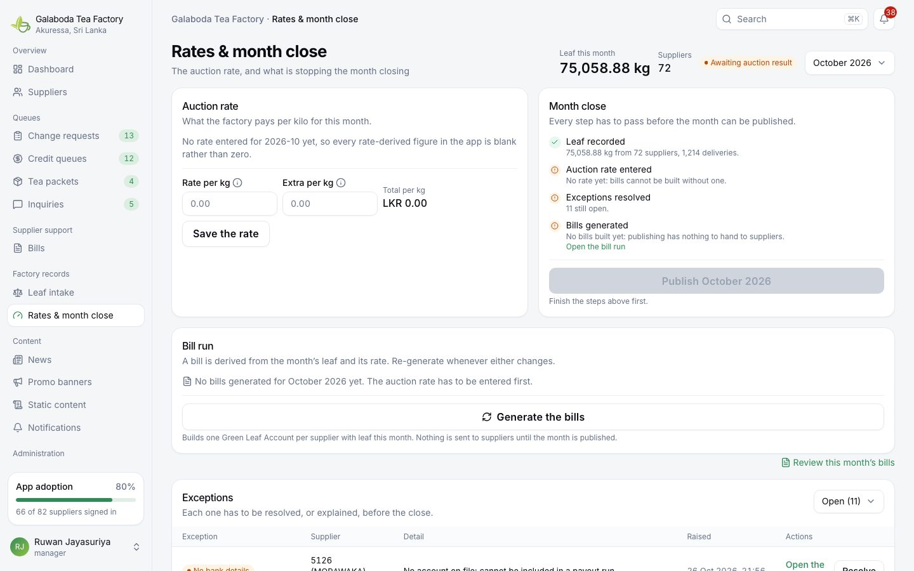
Figure 12.1 Rates & month close: the auction rate, the month close checklist, the bill run and the exceptions.
Enter the rate (manager). When the auction result is known, type the Rate per kg and any Extra rate per kg, and click Save the rate.
Resolve the exceptions at the bottom of the page (for example a supplier with leaf but no bank details), each with a note.
Generate the bills (clerk or manager) with Generate the bills, then Review this month's bills on the Bills screen.
Publish: when every step of the checklist is ticked, another manager (not the one who entered the rate) clicks Publish. The bills appear in the app and each supplier is notified.
Publishing moves the credit limits
Advance, loan and manure limits are worked out from the last published month, so publishing a month changes every supplier's limits.
Coming
Typing "Other deductions" on a bill, and comparing every calculated bill with the factory's printed slip (with hold and release), will appear here when the server supports them.
13. Rates and month close: imported bills Clerk and manager
For a factory whose own system prints the bills (galaboda): the clerk imports the finished bills, the console keeps them exactly as printed, and a manager publishes them. The clerk sees the page with the rate read-only and without the Publish button.
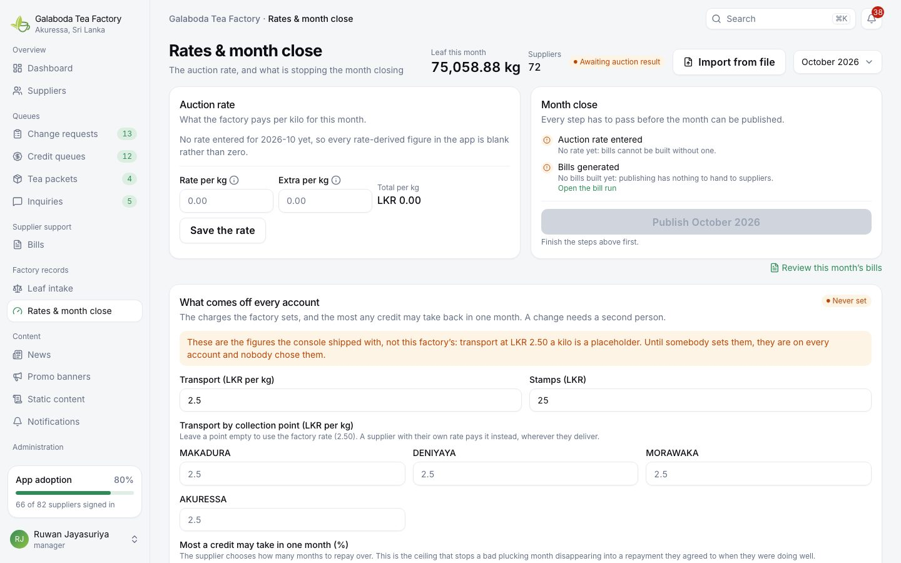
Figure 13.1 Rates & month close for an imported-bills factory: "Import from file" at the top.
13.1 Import a month's bills
In the factory system, export the month's finished bills to Excel, after the slips are printed (about the 10th of the next month).
On Rates & month close, click Import from file. The dialog lists the columns; required ones are marked * (Figure 13.2). Download template gives a file with an example row.
Choose the file. The console checks every row before saving anything.
If a row is wrong, nothing is saved: the list names the row and the problem. Fix the file and import again.
When the file is accepted, review the bills on Bills. A manager who did not import the file publishes the month.
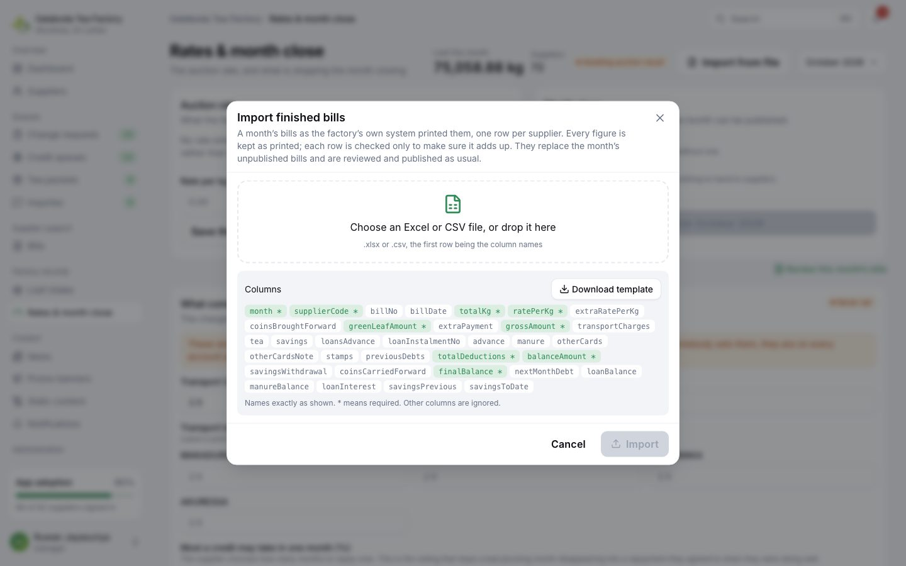
Figure 13.2 Import finished bills: the column names the file must use.
13.2 What the import checks
Check
Example of a refusal
Each row adds up to the cent
Gross is not green leaf + extra + coins brought forward
Everything approved in the console is on the slip
"5708: we approved Rs. 40,000.00 for this month and the slip does not have it." Enter it in the factory system and export again
The month has ended and comes in order
Importing October on 20 October, or a month before the last published one
The balance columns are present
A file without the Loan Balance, Manure Balance or Savings To-date columns
One file per division is fine: each file replaces only the suppliers in it. A division file that arrives after the month is published waits until a manager publishes its bills.
13.3 Importing any file
Excel (.xlsx) or CSV, with the column names in the first row.
All rows or none: one problem refuses the whole file. Row 2 is the first data row.
Figures are refused, never rounded: too many decimals, a minus sign, or 31 February.
Up to 5,000 rows per file.
14. News, banners and fixed pages Content editor
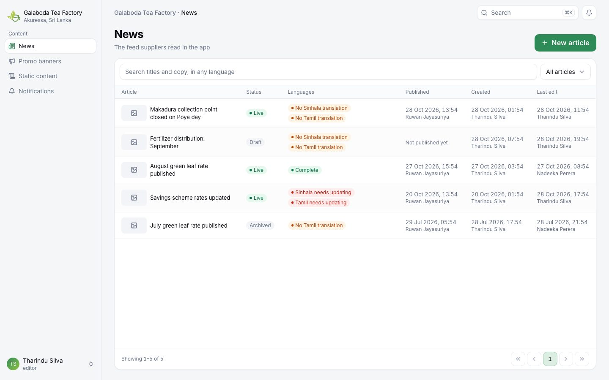
Figure 14.1 News: each article's status and which languages are missing.
14.1 Write a news article
Click News → New article.
Write the title and text in each language tab (Sinhala, English, Tamil). Add a cover image if you have one.
Click Publish, or choose a date and time to publish later.
A missing translation is allowed: the app shows the English to that reader, and the list marks it (for example "No Sinhala translation"). "Needs updating" means the English changed after that translation was written.
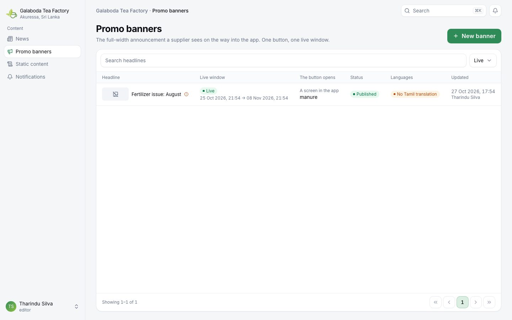
Figure 14.2 Promo banners: the live window and what the button opens.
14.2 Put up a promo banner
Promo banners → New banner.
Write the headline and button label in each language; upload artwork if you have it.
Choose what the button opens (a screen in the app, a website, a phone number or an email) and the start and end dates.
Publish. Suppliers see it only between the start and end dates.
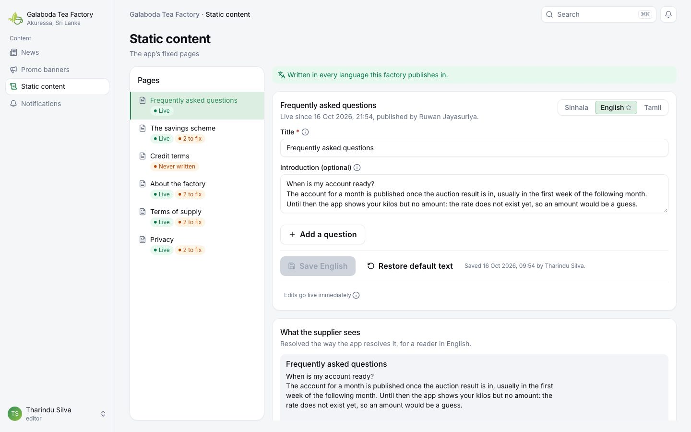
Figure 14.3 Fixed pages: FAQ, savings scheme, credit terms, about, terms and privacy, with a preview of what the supplier sees.
14.3 Edit a fixed page
Choose the page and the language, change the text or add a question, and click Save. An edit to a live page is live at once. Restore default text puts the page back to the standard wording.
15. Notifications
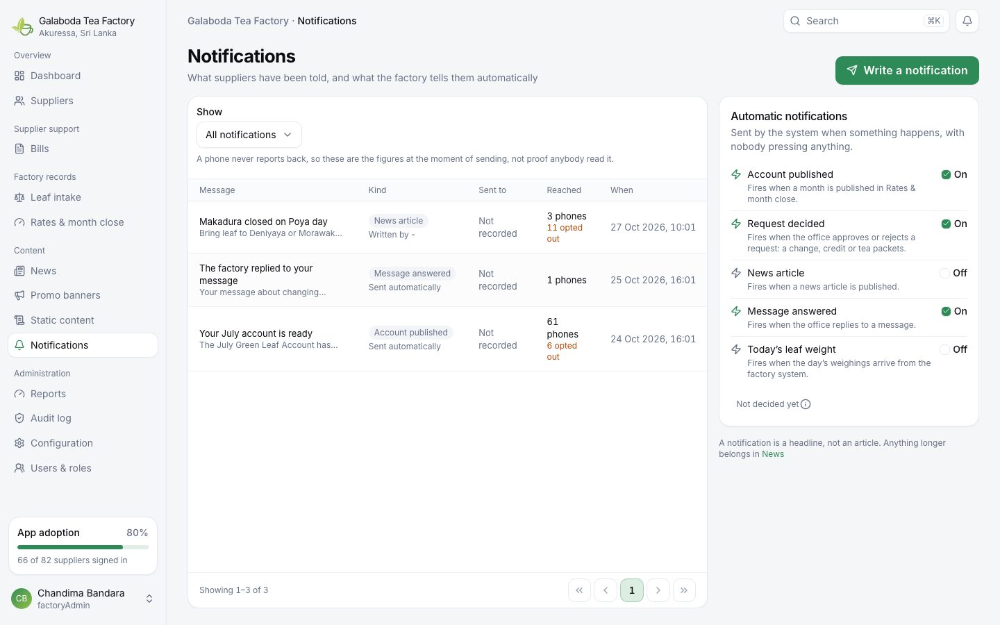
Figure 15.1 Notifications sent, and the automatic ones on the right.
Automatic (right): "Account published", "Request decided", "Message answered" and others, each switched on or off for the factory.
Write a notification: a headline to all suppliers, one collection point or one supplier, now or later. A notification cannot be taken back, so the console checks who it will reach before it is sent.
The list shows how many phones each one reached and how many had turned that kind off.
16. Configuration Factory administrator
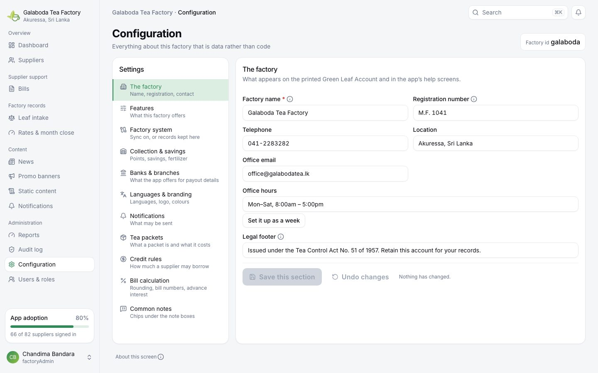
Figure 16.1 Configuration: eleven sections on the left; each is saved on its own.
Choose a section on the left and change the fields.
Click Save this section and confirm. Undo changes puts back what is saved.
Section
What you set there
The factory
Name, registration number, telephone, location, email, office hours and the legal footer printed on every bill
Features
Which services the app and console offer: savings, advances, loans, manure, tea packets, news, banners and more
Factory system
Sync on (records come from the factory's own system) or off (the office keeps them here)
Collection & savings
Collection points, the savings amounts suppliers may choose, the fertilizer catalogue with bag size and price
Banks & branches
The banks suppliers choose from
Languages & branding
Languages, colours and logo
Notifications
What may be sent
Tea packets
Pack size, price, packets per month
Credit rules
How each limit is worked out, and the repayment periods offered
Bill calculation
Where the bills come from, paying in Rs. 1, 5 or 10, the next bill number, advance and loan interest
Common notes
The suggested notes under decision and reply boxes
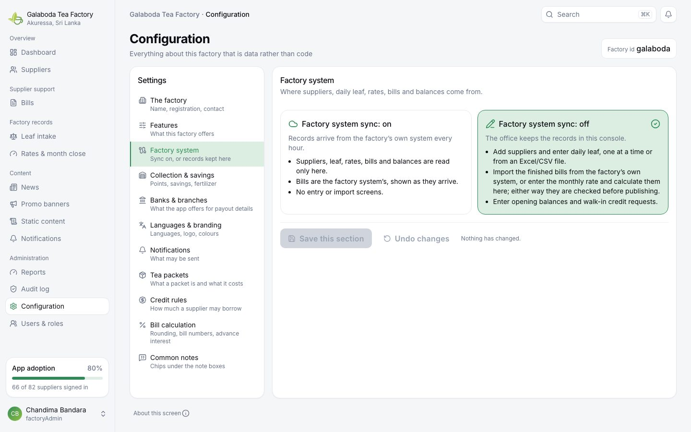
Figure 16.2 Factory system: sync on or off
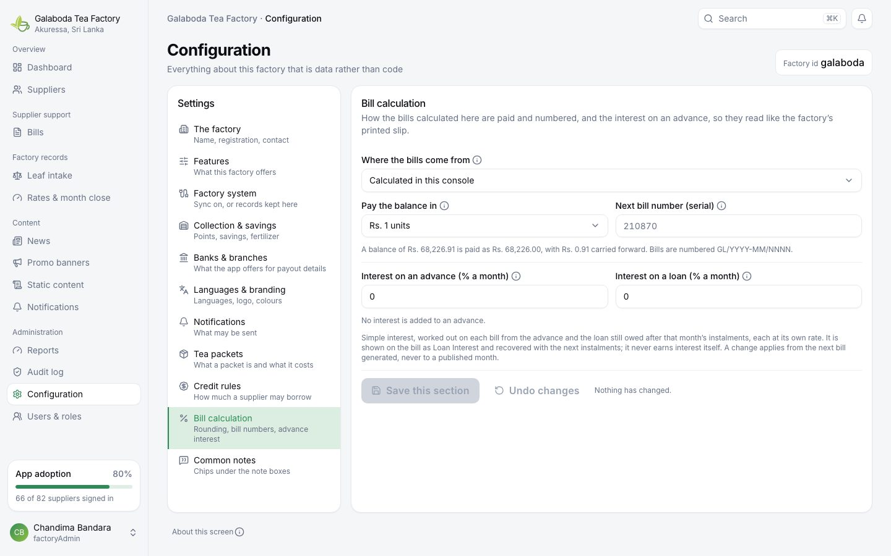
Figure 16.3 Bill calculation
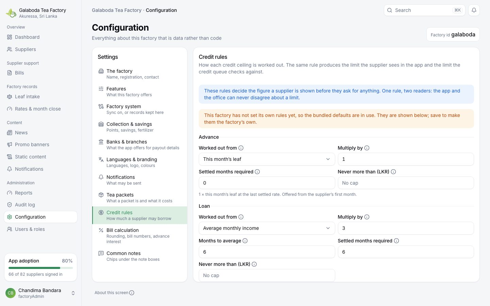
Figure 16.4 Credit rules
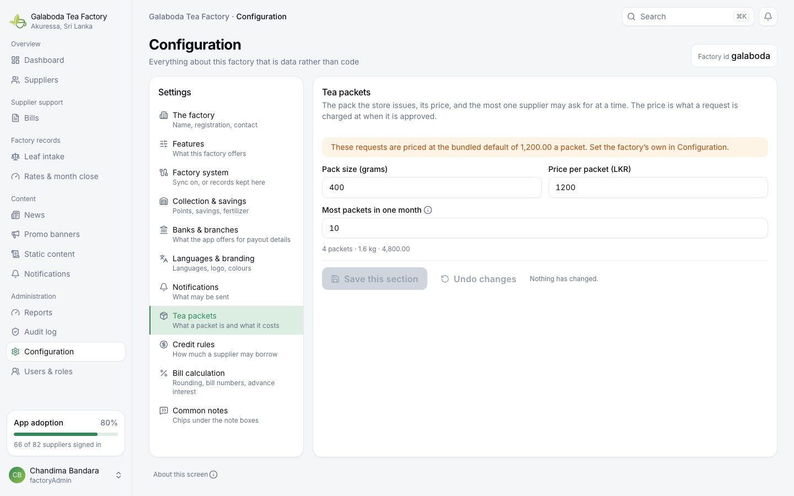
Figure 16.5 Tea packets
Example: a credit rule
Loan: Worked out from Average monthly income, Months to average 6, Multiply by 3, Settled months required 6, Never more than empty. A supplier with an average of Rs. 84,341.08 may borrow up to Rs. 253,023.24. The screen writes the rule out in a sentence under the fields.
Changes the console refuses
Switching the factory system or the bill source while a month has bills made but not published.
Turning off savings, a credit facility or tea packets while money is still held or owed.
Removing a collection point that weighings use, or the fallback language.
17. Users and roles Factory administrator
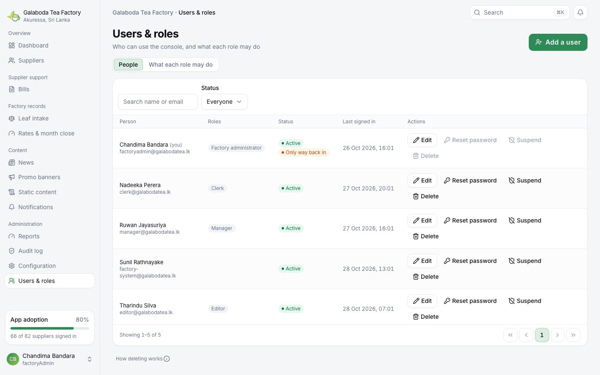
Figure 17.1 People: each console user, their role and status.
Users & roles → Add a user: name, email and role.
The console shows a first password once. Give it to the user; they must change it at the first sign-in.
Reset password, Suspend or Delete from the row. Deleting waits three days and can be undone until then.
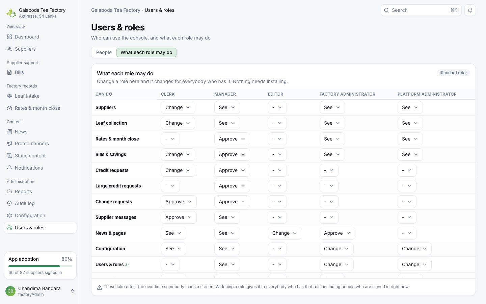
Figure 17.2 What each role may do: See, Change or Approve, for each area.
The console will not let you remove the last administrator, change your own role, or leave nobody able to manage users.
18. Reports, audit log and data status
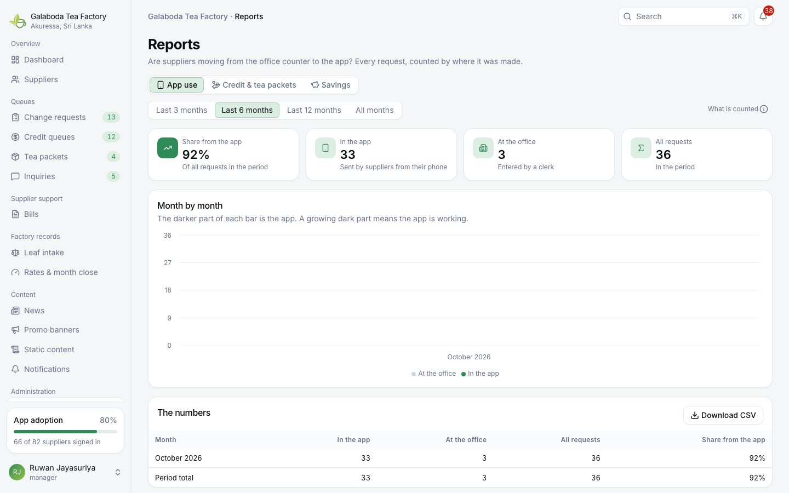
Figure 18.1 Reports → App use: 92% of requests came from the app in the period.
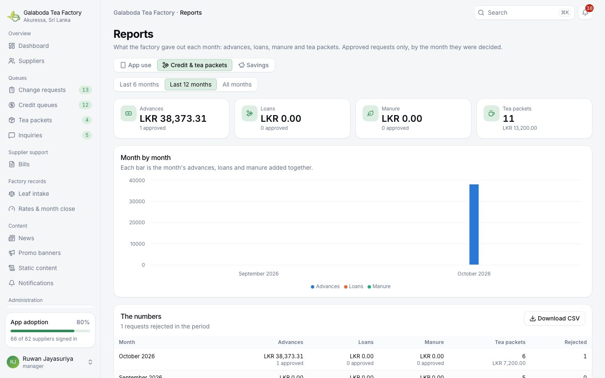
Figure 18.2 Credit & tea packets
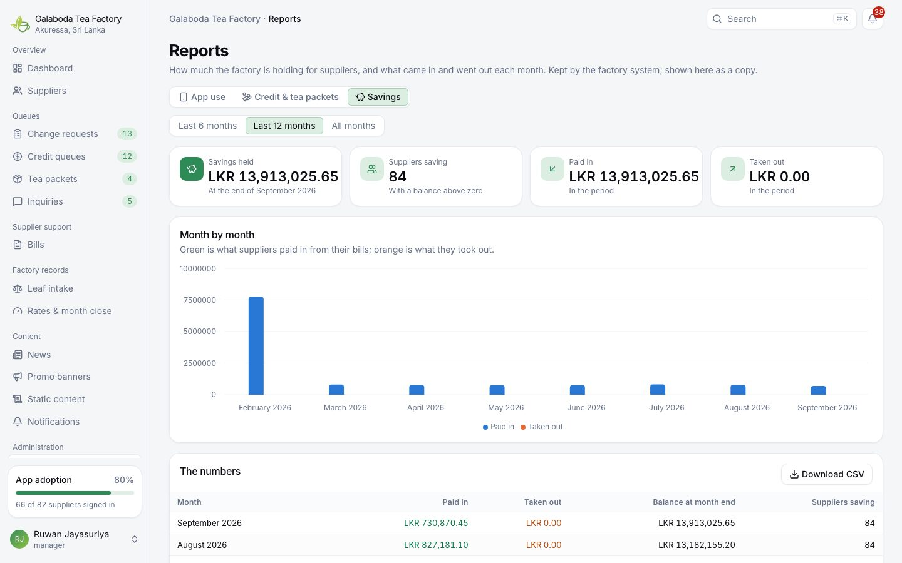
Figure 18.3 Savings held
App use: are suppliers moving from the counter to the app.
Credit & tea packets: advances, loans and manure approved, tea packets issued and requests refused, month by month.
Savings: how much the factory holds for suppliers, for how many, paid in and taken out each month.
Download CSV under each table.
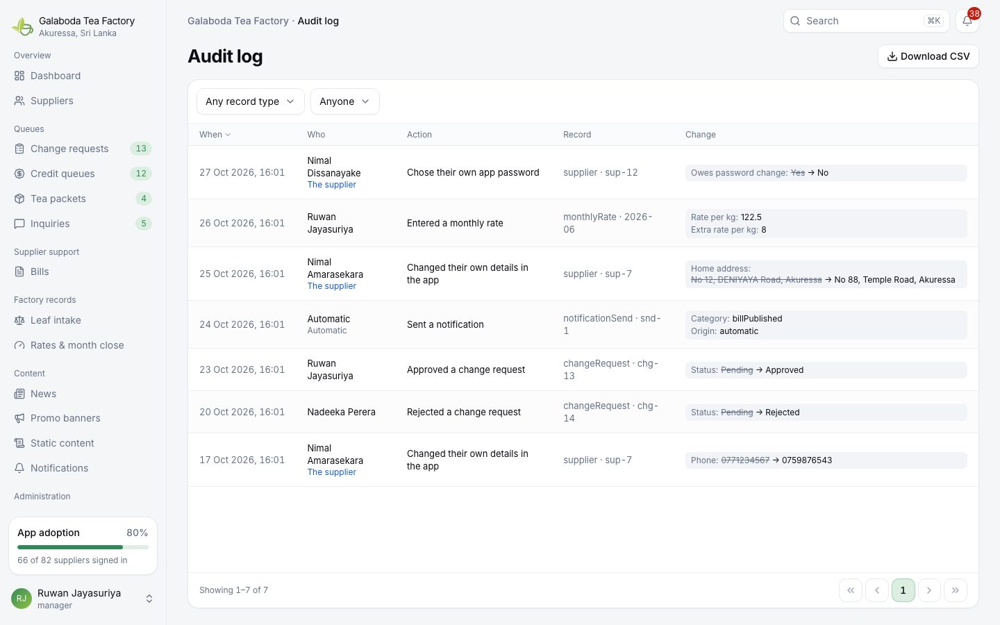
Figure 18.4 The audit log: who did what, when, and what changed.
The audit log cannot be edited. Filter by record type or person, and download it as CSV. Data status (from the sync chip at the top, sync on) says how current the figures are before you quote one to a supplier.
19. When the console says no
Message (in short)
What to do
You recorded this, someone else must decide
Ask another manager
Over the ceiling
Reject with a note, or approve a smaller amount within the limit
A loan is still owed
No new loan or advance until it is repaid
A request is already pending
Decide the first one
A note is required
Every rejection, void and hold needs a reason
Your role does not allow this
The page belongs to another role; ask the administrator
The month is locked
It is published; corrections go on next month's bill
An earlier month is not published
Publish months in order
Approval missing from the slip
Enter it in the factory system, export and import the file again
Busy, try again
A month is being published at that moment; nothing was saved, send it again